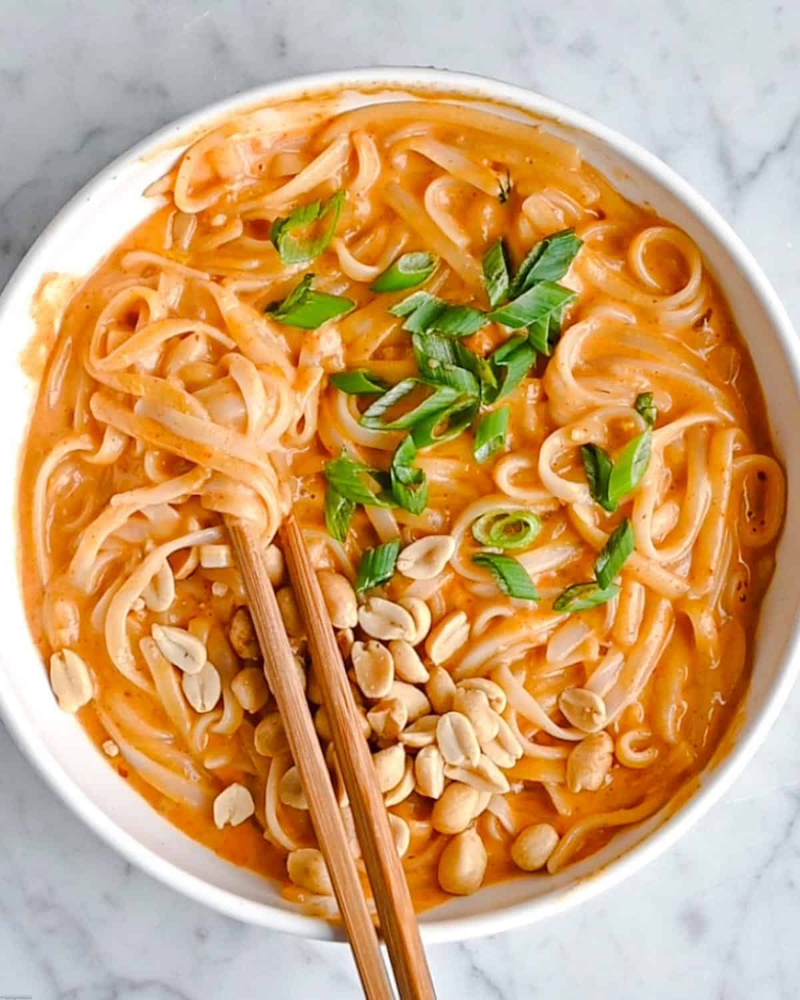

Thai Red Curry Noodles

Delicious recipe for Thai red curry noodles that can be made in under 30 minutes!
This recipe is an amazing cross between a Thai curry dish and a Thai noodle dish. This recipe is made with rice noodles, curry paste, and coconut milk creating a deliciously creamy noodle bowl.
If you would like to add protein, make extra sauce and add in cooked chicken breast pieces at the end. You could also add scrambled eggs to the noodles for added flavor and protein.
Ingredients
- 16 oz Pad Thai Rice Noodles
- 14 oz unsweetened coconut milk
- 1/4 cup vegetable broth
- 3 tablespoons peanut butter
- 3 tablespoons Thai red curry paste
- 1 tablespoon maple syrup
- 1 tablespoon lime juice
- 1 tablespoon minced ginger
- 2 garlic cloves minced
- Salt to taste
- Chopped peanuts for serving (optional)
- Chopped scallions for serving (optional)
Instructions
- Cook the noodles per directions on box. Drain and set aside.
- Make the curry: Meanwhile, in a medium saucepan, add the coconut milk, vegetable broth, peanut butter, Thai red curry paste, maple syrup, lime juice, ginger, and garlic.
- Whisk the curry ingredients to combine.
- Cook the curry over medium-high heat, stirring frequently. Bring the liquid to a gentle boil before reducing the heat. Simmer uncovered for about 10 minutes, or until the sauce starts to thicken. Add salt to taste.
- Mix in the noodles and continue cooking until warmed through.
- Garnish with chopped peanuts and scallions. Serve immediately.